“Wordpress Pinterest Automatic” Documentation by “ValvePress” v4.0
“Wordpress Pinterest Automatic”
Created: 19/4/2012
Doc updated: 29/10/2014
By: Atef (deandev.com)
Support: deandev.com/support
Thank you for purchasing my Plugin. If you have any questions that are beyond the scope of this help file, please feel free to email via my user page contact form here. Thanks so much!
Table of Contents
- Plugin installation
- Update options
- Using the plugin
- Plugin waiting queue
- Plugin action log
- Setup Cron
A) Plugin installation - top
For a fast overview of the plugin installation view this video
- Extract your downloaded file you will find a .zip file named "wp-pinterest-automatic.zip" located in the www folder
- visit your admin page of the wordpress installation you have and under the "plugins tab" hit "add new"
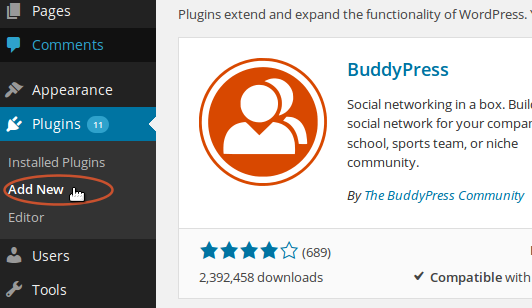 - Hit the upload button to upload the plugin file
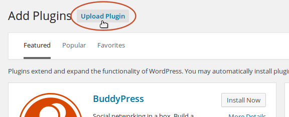 - Click "browse" button to start upload
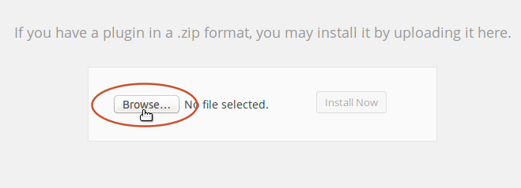 - Select the plugin file "wp-pinterest-automatic.zip" located at your www folder and hit open
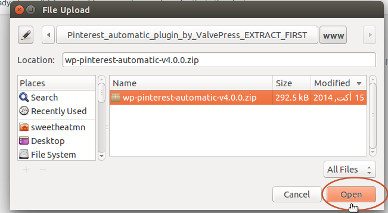 - Click "install now"
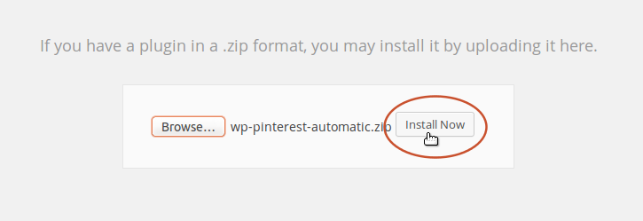 - Activate the plugin
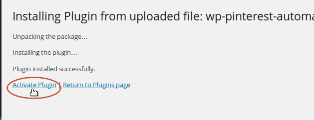
B) Settings - top
to update the settings visit the "Settings" under the "Pinterest Automatic" menu
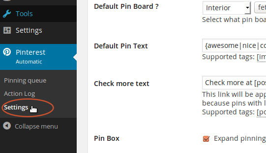Add your purchase code for the product and hit save. Check this Video on how to get purchase code
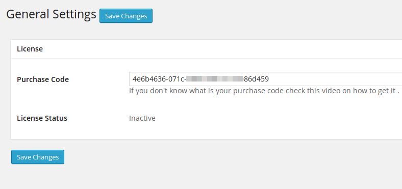If activation is successful you will see that the settings for the plugin appears and the status of the plugin becomes active
If the purchase code registered with another domain you will see a red message that tells you that the code is already registered. you can still activate using this purchase code by checking the "Change Domain" option but note that the plugin at this domain will get deactivated. You shuould have a spearate license for each installation 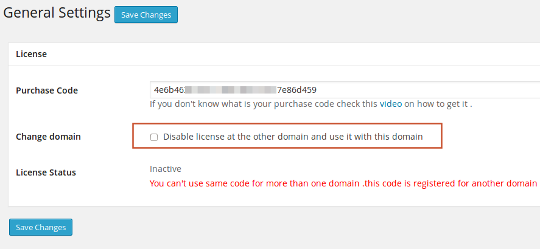
once the plugin is activated you can set options
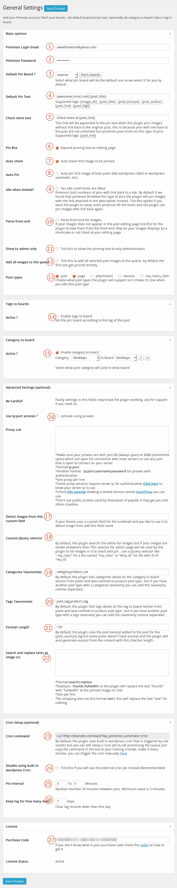
- Pinterest Email : add your pinterest.com account login email
- Pinterest password : add your pinterest.com account login password
- Fetch boards: this button will get your boards in your pinterest account you just added it's login email and pass
Default pin board: select which default board will be used for pinning it is good to save time choosing a board every time
-
Default Pin text : add a defualt text that will be automatically filled when you are pinning an image this is good not to write a pin text every time but you get the defualt pin text where you can still modify .
you can use
- Spintax Form: spintax is on the form {word1|word2|word3} The plugin will choose only one word from the set in the final pin text .
- [image_alt] : Image alt will be replaced by the image alternative text
- [post_title] : you can use this tag which will be replaced with the current post title as example if you have a post with title "angry bird" and you used the form "awesome [post_title]" final pin text will be "awesome angry bird"
- [post_excerpt] : you can use this tag which will be replaced by the post excerpt text
- [post_author] : you can use this tag which will be replaced by the author name
- [post_link] : will be replaced by the current post link(url)
- [post_tags] : you can use this tag which will be replaced by the post tags and converted to pinterest hash tags like if you have a post tag named "awesome" it will be #awesome in the pinterest pin text
- Check more text: Check more part will be appended to the default pin text when the plugin uploads a regular pin with no link back to the source. the plugin upload this type of pins if Pinterest throttled pinning pins with link back.
- Expand pinning box: checking this check will enable the pin box by defult where you can pin the images unchecking this field will make the pin box in your posts edit folded
- Auto check first image to be pinned: Check this option for the plugin to auto select the first image to be pinned
- Auto Pin: Check this option for the plugin to auto pin first image of your bots posts
- idle when limited: Pinterest does not allow us to pin unlimited number of pins with link back to the same site so at some limit it will tell us to slow down. tick this if you want to wait untill these limits are lifted otherwise the plugin will upload the pin as a regular uploaded image and attach the link to the description instead.
- Parse fron-end for images: this will make the plugin load the post from the front end and search for images in it. use this if your images only appears on the fron-end like a gallery that only shows images in the front end using a shortcode or so.
- Show to admins only: tick this if you want to hide the pinning box from Editors and only show to Administrators
- Add all images to the queue: by default the plugin pin the first image and add the rest to the queue. Tick this if you want to sent them all including the first image to the queue.
- Post types: The plugin supports custom post types if you have a gallery or any custom post type check it here and save
- Tag to board: Set what tag if the post has then it goes to a specific board.
- Category to board: Set what category pin to what board
- Proxy List: if your server is blocked from pinterest then you will need to use privat proxies and the plugin will use for connection to pinterest. follow the rules below the box and read the tutorial of the tested service.
- Detect images from custom field: if you store your image url in a custom field add it here and the plugin will grab image from it
- Custom jQuery Selector: By default, the plugin search images in the post editor content but if you have the images in another part of the post editing page add it's css selector in this box . selector may be like .selector for division with a
class = "selector"or "#selector" for a division withid = "selector" - Categories Taxonomies: Categories listed in the "Category to Board" section are listed from posts categories and product category for woo-commerce but if you have another custom post type with categories add it's taxononmy name which you can find in the link of that taxonomy link in the form of "wp-admin/edit-tags.php?taxonomy={taxnonmy_name}"
as example post categories taxonomy link is "wp-admin/edit-tags.php?taxonomy=category" - Tags Taxonomies: Tags listed in the "Tags to Board" section are listed from posts tags and product tags for woo-commerce but if you have another custom post type with tags add it's taxononmy name which you can find in the link of that taxonomy link in the form of "wp-admin/edit-tags.php?taxonomy={taxnonmy_name}"
as example post categories taxonomy link is "wp-admin/edit-tags.php?taxonomy=post_tag" - Excerpt length: if you are using the tag [post_excerpt] and the post does not contain an excerpt, the plugin can auto generate it with the length you specify.
- Search and replace at image src: use this if you want to change the src image sent to pinterest. may be you have a gallery that display thumbnails at the post editor and you want to post the full sized image then you can use this feature to replace some text with another. follow the rules listed below the box.
- Cron Command: The plugin uses wordpress internal cron to process the waiting queue pins one each minute. You still can trigger the cron by a dedicated cron. use the command in the box to setup your cron
- Disable built-in wordpress cron: Tick this if you want to just use the external cron job and skip using the internal wordpress cron job.
- Pin interval: interval between separate pins are random. set the bounds here min and max interval.
- Keep log for how many days?: set how many days log should be kept after this it will be cleared.
- Purchase code: your plugin purchase code: check this video on how to get yourth
C) Using the Plugin - top
To start using the plugin in writing hit "add new" under the "Posts" menu
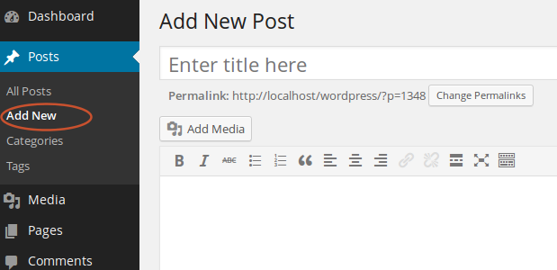you will find a new box called "pitnerest automatic" that will list images in the post once you add them sothat you can check and pin 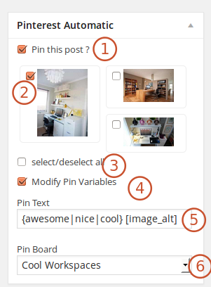
- Pin this post: once you check this option pin box will be enabled otherwise it will be disabled and no images will be pinned
- Images:images appear once you add them where you can check a specific image for being pinned when you hit "publish"
- Select all: check this to select/unselect all images listed
- Modify pin variables: pin text is loaded by default with the default pin text set in the settings page and also the pinbaord check this check to modify the pin variables
- Pin text: the pin text that will be used for the pin
- Pin Board: select which pin you like to pin the images
once you hit publish first image of the checked images will be pinned to your pinterest account automatically and the others will be sent to the pinning queue where the plugin will post one pin every minute .
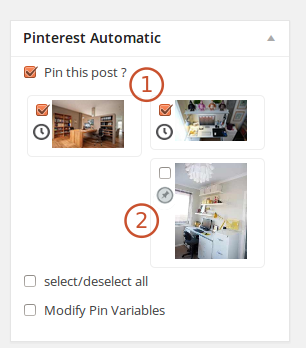- Waiting images: images with a clock icon are waiting for pinning images
- Pinned images : images with pinned icon are already pinned
D) Waiting Queue - top
To see what images are waiting for pinning open the waiting queue under the plugin menu 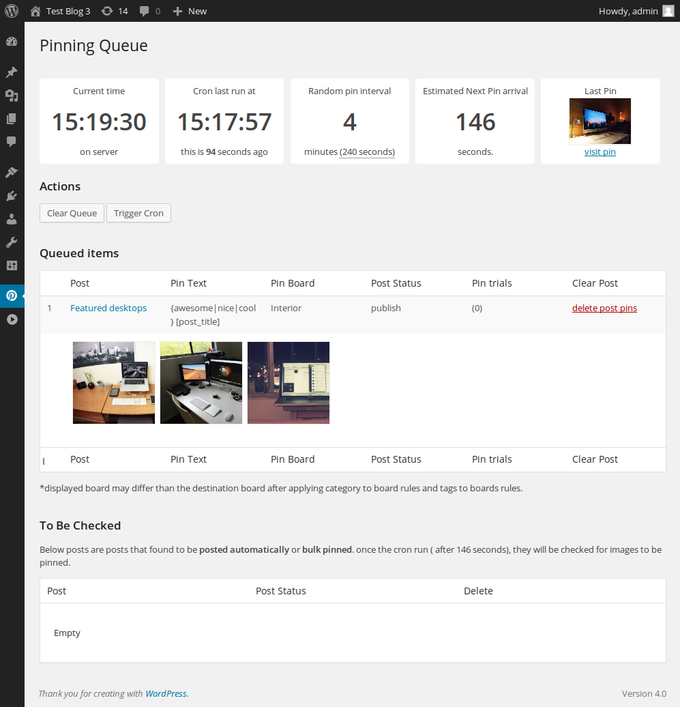
E) Plugin action Log - top
Refer to log in case you have any problem
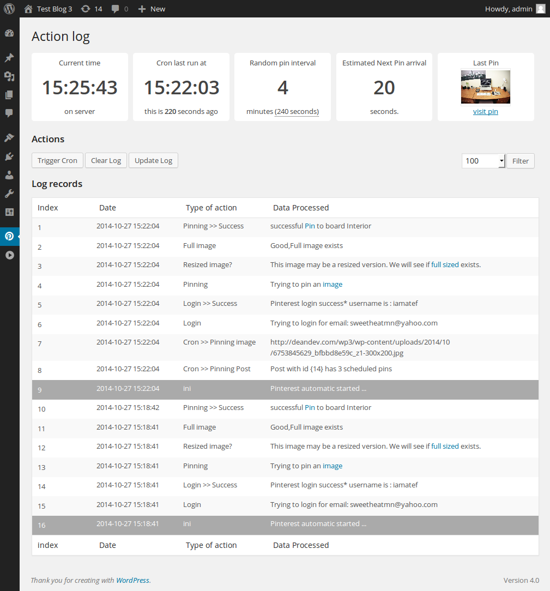F) Setup Cron Job - top
if your host don't support cron jobs or you having any problem with setting up the cron as below then use this free online service to call the file for you after a fixed time intervals (just copy your cron file url don't copy the cron command link) if your host support cron jobs then- Visit your cpanel and hit the "cron" icons
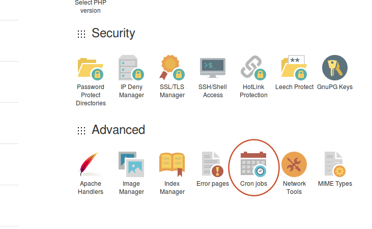 - add your cron command and hit "add new cron job" button

Once again, thank you so much for purchasing this Plugin. As I said at the beginning, I'd be glad to help you if you have any questions relating to this Plugin. No guarantees, but I'll do my best to assist. If you have a more general question relating to the Plugins on PluginForest, you might consider visiting the forums and asking your question in the "Item Discussion" section.
Atef